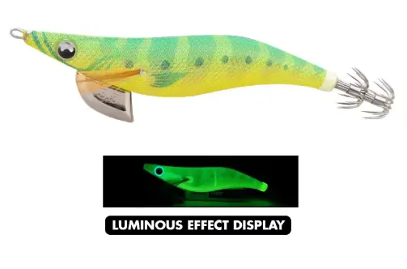

Es el wake-up: Ideal para aguas turbias, poca luz y activación rápida del calamar.
| Condición | Eficiencia |
|---|---|
| 🌫️ Agua turbia | 🔥 Excelente |
| 🌥️ Día nublado | 🟢🟢 Muy alta |
| 🌅 Amanecer / Atardecer | 🟢🟢 Muy alta |
| 🌙 Oscuridad total | 🟢 Alta |
| 🌊 Agua clara | 🟡 Media |